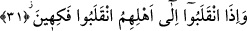
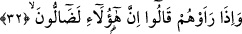

olan ihtimal birinci şıktır.
“Merra” fiili Kamus’un beyânına göre “gitti, birine uğradı” demektir. Fiil ba ve alâ
harf-i cerleriyle geçişli hale getirilebilir.
Âyette geçen “yeteğamezûn/kaş-göz işâretiyle alay ediyorlar” fiilinin kökü olan
“ğamz” birini kaş-göz hareketiyle alaya almak demektir. Müşrikler gözleriyle fakir
müminleri işâret ederek onları ayıplarlar ve: “Şunlara bakınız kendi kendilerini yorup
dünya lezzetini bir kenara bırakıyorlar. Ahirette sevap ve yeniden dirilip mükâfat
görecekleri umuduyla bir sürü meşakkate katlanıyorlar. Oysa dirilme ve yapılanın
karşılığını görme son derece uzak bir ihtimaldir” diyorlardı.
“Teğâmuz” kalıbı kaş-göz hareketiyle işâret etme fiilinin müşareket kalıbıdır. Fiil
ayıplamak anlamına da gelir.
31. Âilelerine döndüklerinde, (alaylarından dolayı) keyiflenerek dönerlerdi.
Oturdukları meclislerinden “âilelerine” âile fertlerinin ve kendilerine tâbi olan,
sapık ve câhil arkadaşlarının yanlarına “döndüklerinde keyiflenerek” onları kötü
sözlerle anmaktan ve kendileriyle alay etmekten zevk duyarak “dönerlerdi.” Dönmek
anlamına olan fiil, âyetin orjinal metninde “inkalebû” şeklindedir. Bu fiilin masdarı
olan inkılab, dönmek bir yerden bir başka mekana geçmek ve geri dönmek anlamınadır.
Bu âyet-i kerimede onların bu çirkin davranışlarını gelip geçenlerin gözleri önünde
yapmadıklarına ve kaş-göz hareketiyle yetindiklerine işâret edilmektedir.
32. Müminleri gördüklerinde: «Şüphesiz bunlar sapıtmış» derlerdi.
Bu mücrimler, günahkarlar “mü’minleri” her “gördüklerinde” onları aşağılayıcı bir
işâretle “şüphesiz bunlar sapıtmış derlerdi.” Yani müslümanlardan gördüklerini ve
görmediklerini kesin bir biçimde sapık olmakla suçlarlardı. Ardından “bunlar
babalarının eski dinini terkedip yeni dine girdiler” derlerdi. Yahut da “bunlar sevap
arzusuyla olup olmayacağı belli olmayan dünya nimetlerini terkediyorlar” derlerdi.
Öte yandan bazı gafil âlimler sülûk ehli olan fakirleri sapıtmak ve delirmekle
suçluyorlar. Özellikle sülûk ehli medrese ehlinden olursa… Çünkü onlar, bu fakir sülûk
ehli olanları başkalarından daha çok sapıtmış olmakla suçluyorlar.
Ey zamâne zâhidi, onun aşkından beni men ediyorsun
Mâzursun, zira sen onu görmemişsin.